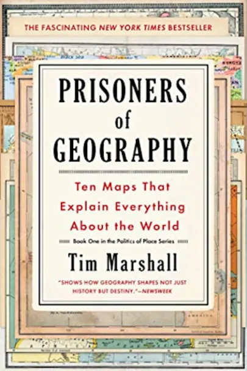

|

|
Maps have a mysterious hold over us. Whether ancient, crumbling parchments or generated by Google, maps tell us things we want to know, not only about our current location or where we are going but about the world in general. And yet, when it comes to geo-politics, much of what we are told is generated by analysts and other experts who have neglected to refer to a map of the place in question.
All leaders of nations are constrained by geography. In “one of the best books about geopolitics” (The Evening Standard), now updated to include 2016 geopolitical developments,
journalist Tim Marshall examines Russia, China, the US,
Latin America, the Middle East, Africa, Europe, Japan,
Korea, and Greenland and the Arctic--their weather, seas,
mountains, rivers, deserts, and borders--to provide a context often missing
from our political reportage: how the physical characteristics of these countries
affect their strengths and vulnerabilities and the decisions made by their leaders.
|